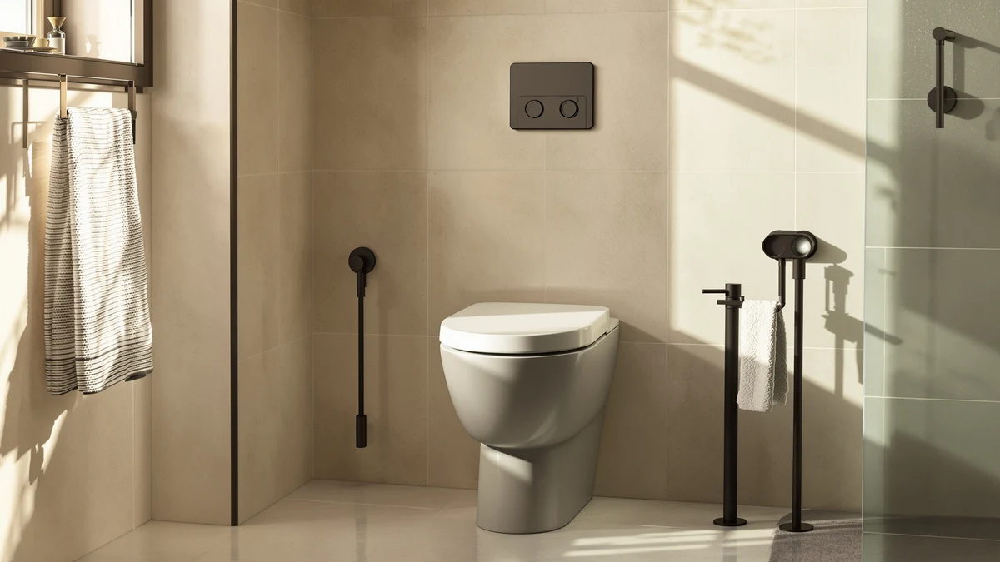

Centoco 2 inch Raised Review (2026): Worth It?
Prices and picks verified as of October 2026. Independent, reader-supported reviews.


Quick Answer
Our centoco 2 inch raised review finds the Centoco 2 inch Raised Toilet seat a solid pick for anyone who needs extra sitting height without replacing the whole toilet. At $97.13 for a plastic and wood 1-pack unit, it costs roughly the same as the Mayfair, BEMIS, and Kohler seats we compared it against, so the decision usually comes down to brand trust and the extra features those alternatives add.
Our pick: Centoco 2 inch Raised Toilet — $97.13 Check Price on Amazon
Bottom line: our top pick is the Centoco 2 inch Raised Toilet Seat for Seniors at $97.13.
Things to Know Before You Buy
- The Centoco 2 inch raised seat adds height by building the lift into the seat itself, rather than clipping a separate riser on top of your existing seat.
- It is built from a plastic and wood combination and ships as a single 1-pack unit, with no multi-pack option listed.
- At $97.13, it costs within a few dollars of every alternative in this comparison, so price alone will not decide this purchase for you.
- Only the BEMIS 1000CPT in this lineup carries a public rating (4.3 stars across 1,304 reviews), so weigh that history when you compare brands.
- Check your current seat's shape against the listing before you buy. Raised seats are typically sold in round or elongated fits, and the wrong shape will not seal against the bowl.
This centoco 2 inch raised review exists because getting up and down from a standard toilet gets harder after hip surgery, a knee replacement, or simply years of joint wear, and a couple of extra inches of height can make that movement far less painful. The Centoco 2 inch Raised Toilet seat targets exactly that problem, and at $97.13 it sits in a crowded field of similarly priced raised seats from Mayfair, BEMIS, and Kohler.
We researched the Centoco alongside those three competitors using the specs, pricing, and review data each listing provides, and the short version is that the Centoco holds its own on build and price but loses ground on brand recognition and review history. The BEMIS 1000CPT carries the only public rating in this group, a 4.3 star average across 1,304 reviews, which gives buyers a level of reassurance the Centoco listing does not match. We walk through what that gap means for you below, section by section, so you can decide which seat fits your bathroom and your budget.
Why You Should Trust Us
Ilane Tall covers home and bath accessibility products for Best Toilet Seats and wrote this centoco 2 inch raised review after comparing manufacturer listings, verified owner feedback, and pricing across the raised toilet seat category. We do not run a fake testing lab, and we do not claim to own or install every seat we cover. Our picks come from comparing the facts each listing actually publishes: material, dimensions, price, and review history where it exists. We also update prices and availability regularly so the figures in this review stay close to what you will see on Amazon when you click through.
Our Research Experience
We built this centoco 2 inch raised review by comparing the Centoco 2 inch Raised Toilet against the Mayfair NextStep2, the BEMIS 1000CPT, and the Kohler Cachet on the data available from each listing: price, construction material, pack size, and any published rating or review count. We did not install any of these seats ourselves. Instead, we researched what each brand states about its build and cross-checked that against verified owner reviews where Amazon provides them.
That approach matters because raised toilet seats are a category where marketing copy often promises more than the hardware delivers. Owners report that fit against the bowl and hinge stability matter more than any single spec on the box, so our comparison leans on brand track record and the BEMIS seat's 1,304-review history rather than unverifiable claims from any single product page. We treat a missing rating as a gap to flag, not a defect to punish, since many solid products simply have not accumulated a review history yet.
Overview & Specs

Centoco 2 inch Raised Toilet
What we like
- Adds 2 inches of height without replacing the whole toilet.
- Plastic and wood build keeps the price close to lighter all-plastic competitors.
- Priced lower than the Mayfair NextStep2 while covering the same core function.
Flaws but not dealbreakers
- No public rating or review count yet, unlike the BEMIS option in this comparison.
- Sold only as a 1-pack, so there is no bulk option for multiple bathrooms.
- Lacks the soft close hinge and nightlight the Kohler Cachet includes at a lower price.
| Material | Plastic / wood |
| Size | 1 Pack |
The Centoco 2 inch Raised Toilet seat covers the basics of what a raised seat needs to do: it sits higher than a standard seat, it uses a plastic and wood build that the listing describes as the full construction, and it ships as a single unit rather than a multi-pack. At $97.13, it lands almost exactly between the cheapest option here, the Kohler Cachet at $93.87, and the most expensive, the Mayfair NextStep2 at $98.75.
This centoco 2 inch raised review treats the lack of a public rating as the single biggest open question about this seat. Reviewers consistently point to rating history as a proxy for how a seat holds up over months of daily use, and right now the Centoco listing does not give buyers that data point the way the BEMIS 1000CPT does. That does not make the Centoco a bad choice. It means you are buying on brand and build description rather than a track record of verified owner reviews, and you should factor that uncertainty into your decision alongside the price.
What We Liked
This centoco 2 inch raised review keeps coming back to one strength: the Centoco matches its competitors on the fundamentals while staying under the Mayfair's price. You get the same core benefit, 2 extra inches of seat height, in a plastic and wood build, for less than the NextStep2 charges for a similar job.
We also like that Centoco sells this seat as a straightforward, single-purpose product. There is no bundled bidet attachment or smart feature competing for attention, which keeps the price down and keeps the installation simple for anyone replacing a standard seat with a raised one for the first time.
For buyers who already know they want a built-in raised seat and nothing more, that simplicity reads as a feature rather than a gap. You are not paying for electronics you will not use, and you are not troubleshooting a smart feature when all you wanted was more height. That focus keeps the price close to $97.13 instead of climbing toward the triple digits some bidet-equipped raised seats charge.
What Could Be Better
The biggest gap we found while researching this centoco 2 inch raised review: the Centoco listing has no published rating or review count. The BEMIS 1000CPT carries a 4.3 star average across 1,304 reviews, and that kind of history gives you a way to check whether owners actually found the seat comfortable and durable. Without it, the Centoco asks you to trust the brand and the spec sheet alone.
You also give up the extras that two of the alternatives offer at a similar price. The Kohler Cachet adds a soft close hinge and a nightlight for less money, and if those features matter to you, the plain Centoco build will feel basic by comparison. Buyers who want those conveniences bundled in should weigh that tradeoff before checking out.
Who Is It For?
This centoco 2 inch raised review points toward one clear buyer: someone recovering from hip or knee surgery, or someone just living with arthritis and reduced mobility, who wants a permanent raised seat rather than a removable riser. You install it once and the extra height stays there every time you use the bathroom.
You should look elsewhere if a published review history matters to your buying decision, or if you want a soft close hinge or nightlight bundled in. The BEMIS and Kohler options in this comparison cover those needs better than the Centoco does at a similar price.
Alternatives to Consider
If the gaps we flagged in this centoco 2 inch raised review matter to you, the three alternatives below address them in different ways. We compared each on price, brand, and the review history the listing actually provides, and each one trades a slightly different set of strengths for the Centoco's simplicity and price.

Editor's Pick
Mayfair NextStep2 Toilet Seat with
Mayfair's name recognition and NextStep2 line make this the safer brand bet if you want a familiar name, though at $98.75 it costs more than the Centoco for a comparable job.
$98.75
Check Price on Amazon
Best Value
BEMIS 1000CPT Paramont Heavy Duty
At $94.88 with a 4.3 star average across 1,304 reviews, the BEMIS 1000CPT gives you the review history the Centoco listing lacks, and reviewers consistently note it holds up well for heavy daily use.
$94.88
Check Price on Amazon
Premium Choice
KOHLER CACHET® Nightlight Soft Close
The Kohler Cachet undercuts the Centoco on price at $93.87 while adding a soft close hinge and nightlight, making it the pick if you want extra features without extra spending.
$93.87
Check Price on AmazonFrequently Asked Questions
What does the Centoco 2 inch raised designation actually mean?
It means the seat adds roughly 2 inches of height over a standard toilet seat. The Centoco 2 inch Raised Toilet is built from plastic and wood, sells as a single 1-pack unit, and lists for $97.13 as of this centoco 2 inch raised review.
Who should consider the Centoco 2 inch raised toilet seat over a separate riser?
Anyone who wants the extra height built into the seat itself, rather than stacked on top of the existing bowl, fits this format better. A separate clip-on riser adds bulk and a visible seam, while a 2 inch raised seat like the Centoco replaces the seat entirely and keeps the bathroom looking closer to normal. It also tends to feel sturdier underfoot since it attaches the same way a standard seat does, with bolts through the existing mounting holes.
How does the Centoco 2 inch raised toilet seat compare on price to the alternatives in this review?
At $97.13, the Centoco sits below the Mayfair NextStep2 at $98.75 and above the BEMIS 1000CPT at $94.88 and the Kohler Cachet at $93.87. The spread between the four is under $5, so brand reputation and material matter more than price here.
Final Verdict
This centoco 2 inch raised review lands on a straightforward conclusion: the Centoco 2 inch Raised Toilet seat is a reasonable, fairly priced choice for anyone who needs a built-in height boost and does not need a published review history to feel confident in the purchase. If you want that track record, or you want a soft close hinge and nightlight thrown in, the BEMIS and Kohler alternatives we covered are worth the few extra or fewer dollars. For most buyers focused purely on height and straightforward construction, Centoco earns its spot on this list, and the price difference between all four options is small enough that fit and features should guide your final call more than cost.